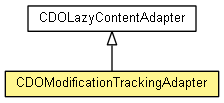

-
-
Method Summary
-
Methods inherited from class org.eclipse.emf.ecore.util.EContentAdapter
basicSetTarget, basicUnsetTarget, handleContainment, removeAdapter, resolve, selfAdapt, setTarget, setTarget, setTarget, unsetTarget, unsetTarget, unsetTarget, unsetTarget
-
Methods inherited from class java.lang.Object
clone, equals, finalize, getClass, hashCode, notify, notifyAll, toString, wait, wait, wait
Copyright (c) 2011, 2012 Eike Stepper (Berlin, Germany) and others.